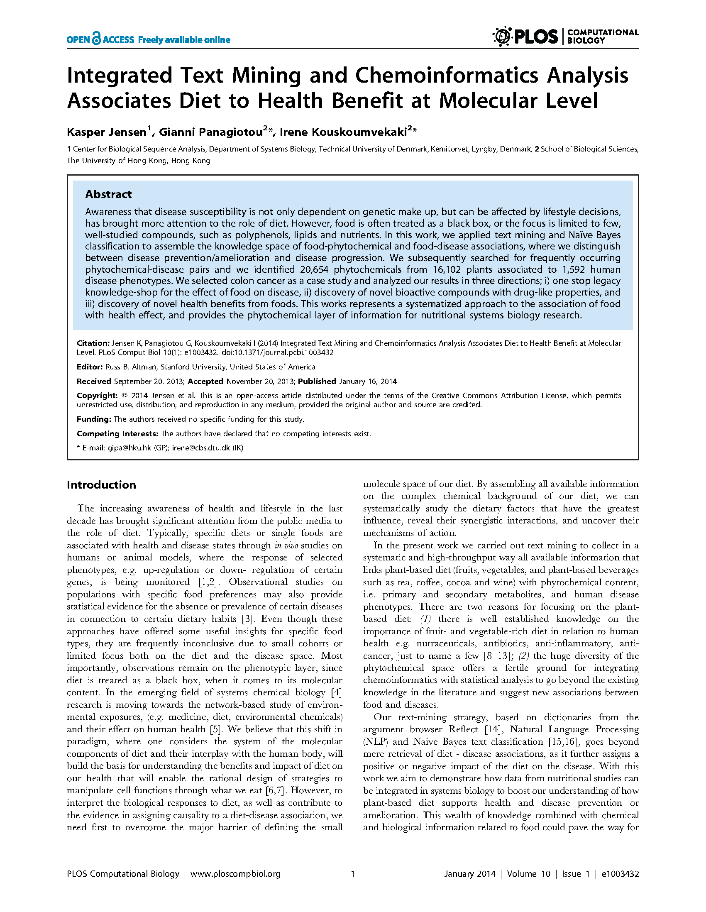
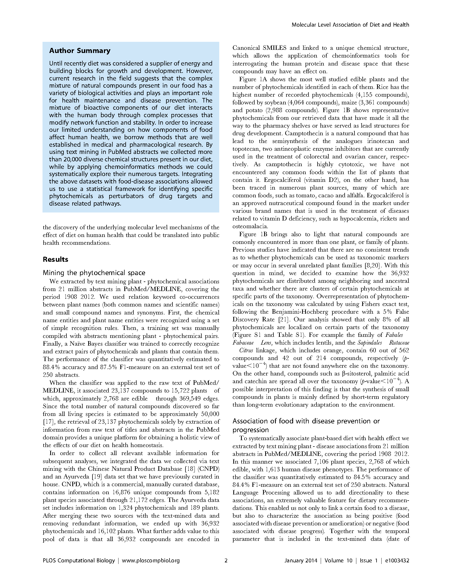
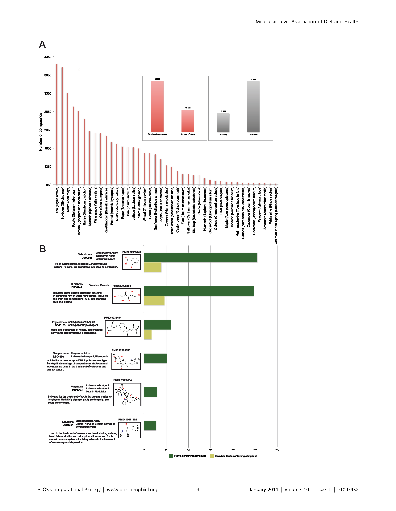
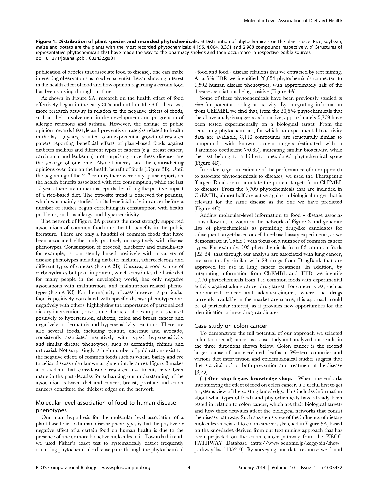
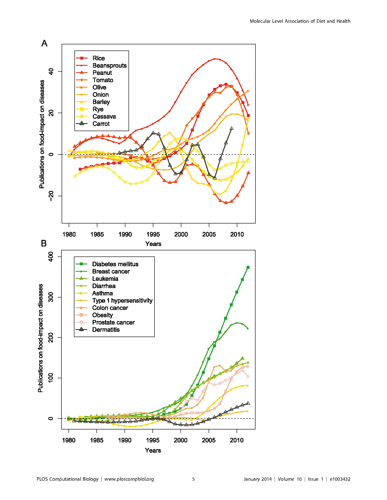
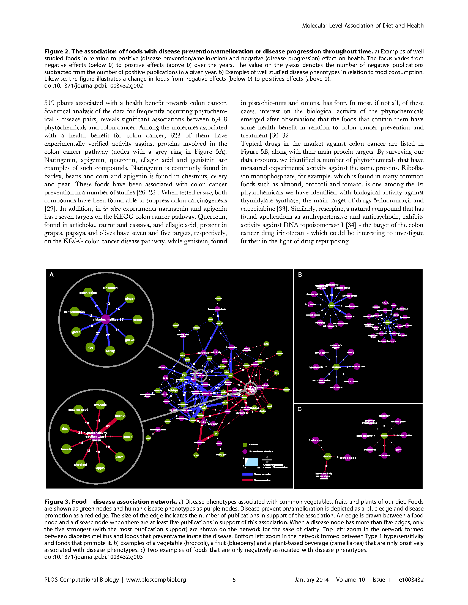
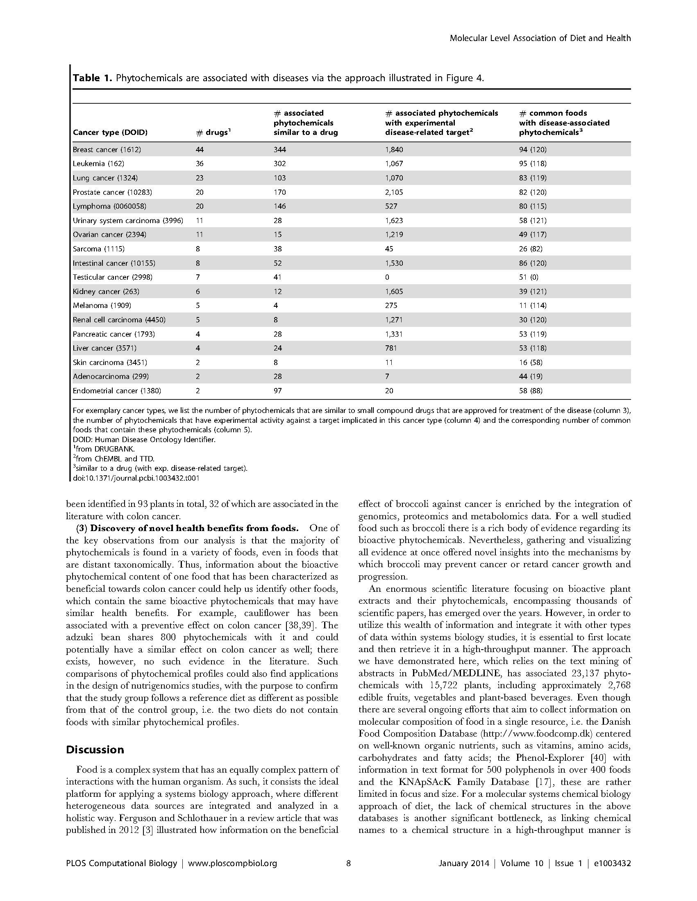

Search Terms
Integrated Text Mining and Chemoinformatics Analysis Associates Diet to Health Benefit at Molecular Level
by Kasper Jensen, Gianni Panagiotou, Irene Kouskoumvekaki
Published 23 Jan 2014. Last updated March 27, 2016 at 1:00 PM
Awareness that disease susceptibility is not only dependent on genetic make up, but can be affected by lifestyle decisions, has brought more attention to the role of diet. However, food is often treated as a black box, or the focus is limited to few, well-studied compounds, such as polyphenols, lipids and nutrients. In this work, we applied text mining and Naïve Bayes classification to assemble the knowledge space of food-phytochemical and food-disease associations... read more
Papers Categories
Search








R-Score: 80%
-
Databases
-
Reuse subcomponents
- Reflect
- PubChem
- ChEBI
- CHEMLIST
- (CNPD)
- Ayurveda
- Plant For A Future (PFAF)
- Open Biological and Biomedical Ontologies (OBO) Foundry [51]
- 143 common, non-processed foods was retrieved from the Danish Food Composition Database
- Chemical-protein association data from ChEMBL, version 15
- Therapeutic Targets Database [53] (TTD Version 4.3.02)
-
ID mapping
- Names of land plant species (embryophyta) and their synonyms from NCBI
- Chemical compound names and synonyms were taken from the argument browser Reflect
- Edible plant names were retrieved from Plant For A Future (PFAF) and were mapped to NCBI IDs
- Retrieved 70,005 human disease terms and synonyms from the Open Biological and Biomedical Ontologies (OBO) Foundry [51]
- Names were mapped to NCBI land plant species, collapsed to the corresponding species ID
- Canonical SMILES with no salts, isotopic or chiral center information were used as the unique molecular identifier
- Disease names were mapped to the OBO Foundry human disease ontology
- Order in disease categories
-
Input parameters
- Drugs were obtained from KEGG Disease Entry: H00020
-
Links
- NCBI http://www.ncbi.nlm.nih.gov/taxonomy
- PubMed/MEDLINE http://www.nlm.nih.gov
- http://openbabel.org/wiki/Canonical_SMILES
- KEGG PATHWAY Database http://www.genome.jp/kegg-bin/show_ pathway?hsadd05210
-
Version
- Chemical-protein association data from ChEMBL, version 16
- Therapeutic Targets Database [53], version 4.3.02
-
Reuse subcomponents
-
Tools
- OpenBabel
- Cytoscape
- ChemTagger
-
Input data
- 2,074 name-tags, plants and human disease phenotype name entities from 333 abstracts was compiled for training
-
Threshold parameter
- ‘preventive’ association ; ‘promoting’ association ; Name entities of plants and human diseases mentioned in other contextual associations were used as the ‘noise’ training set (OTS).
- the lexical features were chosen based on the tf-idf score [47]
-
Input parameters
- With no salts, isotopic or chiral center information
- Version
- Cytoscape v.2.8.1
-
Methods
-
Statistics
- Correction method
- Follows the Benjamini-Hochberg procedure
- Statistical test
- Categorical Fisher’s exact test
- Tool
- Unspecified tool
- Naive Bayes Classifier
- Input Data
-
Thresholds for performance
- The performance of the classifier was subsequently evaluated on an external, balanced test set of 250 positive and negative abstracts, and resulted to 84.5% and an F1-measure of 84.4%
-
Threshold for significance
- 5% false discovery rate
- Our alternative hypothesis; null hypothesis
- Correction method
- Curation
-
Scripts
- Unclear: "projected the phytochemical content of a child node to the parent node"
-
Statistics
Leave a Comment:

Jessie Dun March 25, 2016 at 9:30 PM
I've added the Jensen 2014 paper. What does everyone think?
Ina Fiterau March 28, 2016 at 2:13 AM
How was the phytochemical content of a child node projected to the parent node?